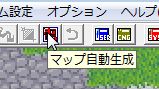
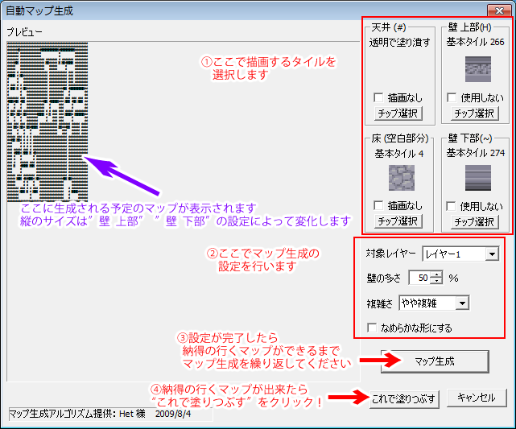
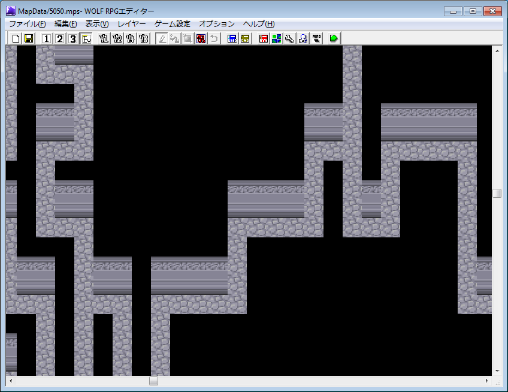

【B.自動マップ生成機能】
WOLF RPGエディターには自動マップ生成機能があります。マップを作るのが面倒なとき、マップ作り中にインスピレーションが湧かないとき、そういうときの補助として便利です。
マップの自動生成は。

このアイコンをクリックすると、下の「自動マップ生成」ウィンドウが表示されます。
| 主な使い方は以下の①～④の通りです。  |
↓「これで塗り潰す」 を押すと……
| このように、指定したレイヤーにプレビュー通りのマップが生成されます。 ただ、このマップはまだまだ荒削りな状態、ちょこっと修正して装飾を付けることで、 より綺麗なマップに仕上がることでしょう。  |
※【謝辞】 このマップ生成アルゴリズムは、Het様の提供によるものです。ご協力、誠にありがとうございました。
Het様のWebサイト http://d.hatena.ne.jp/Het/